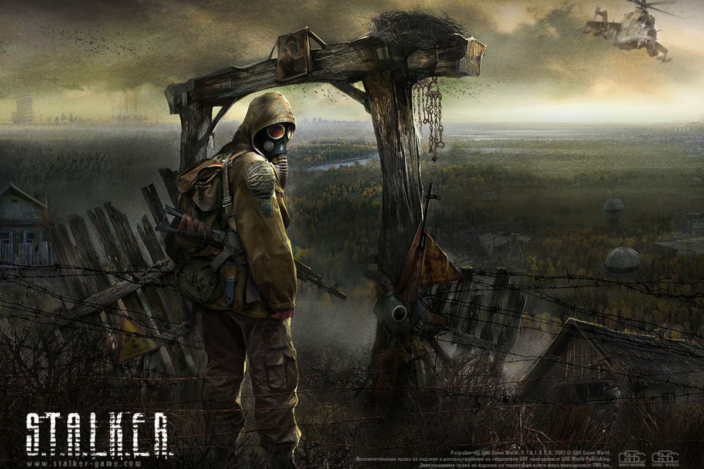

STALKER: Shadow of Chernobyl (initialement STALKER: Oblivion Lost) est un jeu vidéo développé par le studio ukrainien GSC Game World. Il s’agit d’un survival - jeu de tir à la première personne intégrant des éléments de jeu de rôle. Dans STALKER, le joueur prend l'identité d'un pilleur d'artefacts de « la Zone ». La Zone est le lieu de l'explosion de la centrale nucléaire de Tchernobyl qui est survenu en 1986, devenu un no man's land à cause des nombreuses radiations qui causent d'étranges changements dans la faune et la flore, ainsi que des anomalies dans les lois physiques. Le joueur peut se déplacer dans les environs pour effectuer ses missions. Début 2007, THQ, l'éditeur du jeu, a révélé que STALKER était l'acronyme de « Scavengers, Trespassers, Adventurers, Loners, Killers, Explorers and Robbers »1. Traduits en français, ces termes signifient « Pilleurs, Transgresseurs, Aventuriers, Solitaires, Tueurs, Explorateurs et Voleurs ». En outre, le verbe anglais « to stalk » signifie « avancer furtivement, traquer, rôder ».
Tchernobyl, 2006. Vingt ans après la catastrophe nucléaire, une nouvelle explosion du réacteur a lieu. Personne ne sait vraiment ce qui a pu se passer, mais la présence inquiétante de phénomènes météorologiques ou géologiques comme des séismes ou de grands orages laisse à penser que le réacteur a explosé une seconde fois. La Zone étant devenue dangereuse, les autorités la bouclent et en interdisent l'accès. En 2008, des mutants font leur apparition à proximité du périmètre de sécurité et sont repoussés par l'armée. La population locale se pose quelques questions à propos de ce qui se passe dans la Zone. Les plus courageux s'aventurent dans la Zone mais peu d'entre eux en reviennent. Les quelques survivants font part de récits fantastiques et rapportent des « reliques » appelées artefacts, qui se négocient à des prix exorbitants auprès des scientifiques et de marchands peu scrupuleux. Ces braconniers de la Zone sont surnommés les « Stalkers ». En plus de la violente concurrence entre Stalkers, différentes factions se font une guerre ouverte : le Devoir, la Liberté, le Monolithe, les militaires, les mercenaires, les scientifiques et les bandits. Le jeu se déroule en 2012. Le joueur y incarne un Stalker surnommé « Le Tatoué » qui a perdu la mémoire, avec sur son bras tatoué les lettres « STALKER ». Le joueur commencera par exécuter quelques missions pour le compte du marchand d'artefacts qui l'a recueilli et soigné. C'est ainsi qu'il fera ses premiers pas dans la Zone…